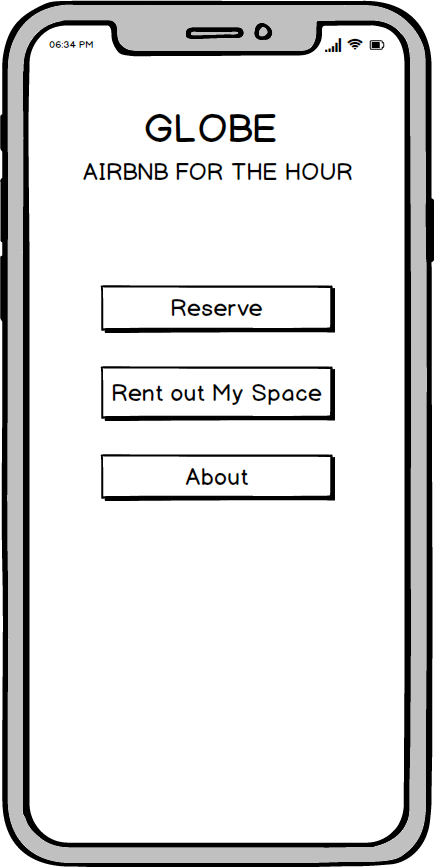

Brief
For this project, my team selected an emerging start-up and designed a high-fidelity user interface of its product/service. This involved wireframing, prototyping and running user experiments on UserTesting.com. After much research, we decided to go with a Y-Combinator startup called Globe.
Globe provides Airbnb-style home rentals, but by the hour instead of by nights. The current primary target demographic is suggested to be traveling professionals (who need quiet spaces for calls, work etc.). We see Globe to Airbnb as Zipcar is to traditional car rental services, and intend to build a mobile app for Globe that makes it more convenient for clients to complete a rental as well as interact with their host.
Research
We began the project by investigating Globe's target user group, which are urban homeowners, home renters and young urban professionals. Although Globe's final app would have functionalities to rent and to host, we decided to focus on the former, given that we only had two weeks to complete this project.
Our research indicated that a young urban professional is likely to use the Globe app to rent a living room on an hourly basis in the following scenarios:
- He/she experiences a flight delay and wants to find a place to rest for a few hours.
- He/she wants to take a break out of the office, but wants a space more comfortable and private than the Starbucks around the corner.
- He/she is a freelancer who is looking to rent a comfortable workspace for a few hours of the day regularly.
With this in mind, we began to wireframe how a Globe user might use the mobile app:

Design
After several rounds of critique on the wireframes, we then moved on to creating high-fidelity mock ups of our app. The motivation of the visual design was to create a light and exciting look that entices the users to use the app. In the terms of the layout, we wanted the home page to highlight the closest available spaces, and spaces readibly available to the user to increase relevance.
We also integrated smart and intuitive use of icons and other visual elements to help the user create real-world mapping of the app functions (eg. payment input box in the form of a credit card), and aid with sifting through many options quickly.
User Testing
We conducted our own usability test through a remote user testing service, UserTesting.com, using our interactive hi-fi prototype. In order to test the effectiveness of our design, we created a realistic space-booking scenario and relevant tasks for the test users:
Scenario
Imagine that you’re a travelling professional who wants to book a private space (on any scale) on-the-go. Using the app, try to select a room that is closest to your location, reserve it and complete the payment. To accomplish this, you must:
- Create a user account.
- Select a room that’s closest to your location and check its time availability.
- Select your reservation time and proceed to payment.
User Testing Results
Overall, all 3 of our test users were able to navigate between our screens. User 1 found the prototype “easy to use”, and is impressed that he was able to “complete the booking task within minutes”, contrasting to normally a hotel or a flight. He also remarked that he could “find all the necessary information on the same page, and it wasn’t overwhelming”. In addition, User 1 did not make any planning errors at all. This user experience supports our design hypotheses.
The other two users navigated as swiftly as the first user through the prototype, but because of the dimensions of their mobile phones, were unable to get to the final payment page, which frustrated them. In that process, they made several planning errors. These user experiences do not completely support our hypothesis. The 3rd user liked that the “most immediate room display are the ones closest to his/her location and currently available”, which supports our hypothesis.
Reflection
Based on user testing results and critique feedback, an important design change is improving the interface responsiveness, as it was the biggest hurdle our test users faced, who otherwise considered our app prototype to be good. There was also feedback suggesting that a sliding button for the user to return to the main page from the confirmation page is unnecessary, as it doesn’t contain any crucial information. Apart from these two feedbacks, our test users liked the ease of use of our interface, especially its layouts.
Overall, we enjoyed the usability testing experience because we were able to iteratively improve our design through different channels. We realised that open, constructive communication to receive feedback is important, because we, as designers, often fail to see the room for improvement of our designs due to confirmation bias, and an existing familiarity with the interface and its functionality. In retrospect, we think that we should provide clearer test instructions to our test users, and foolproof our prototypes by making them work on all phone dimensions.